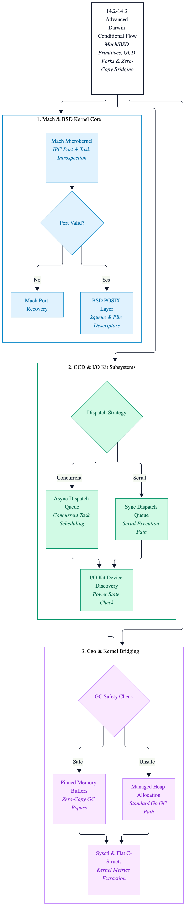
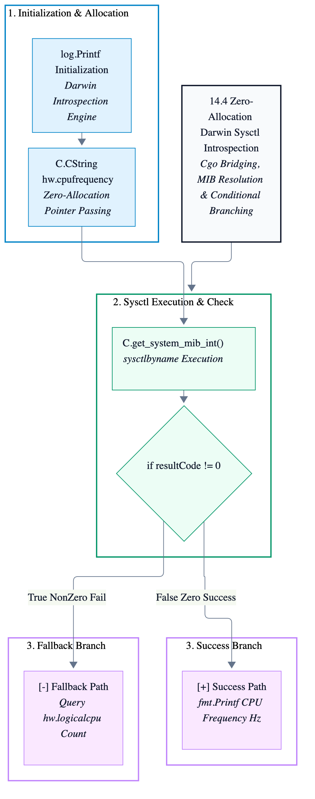
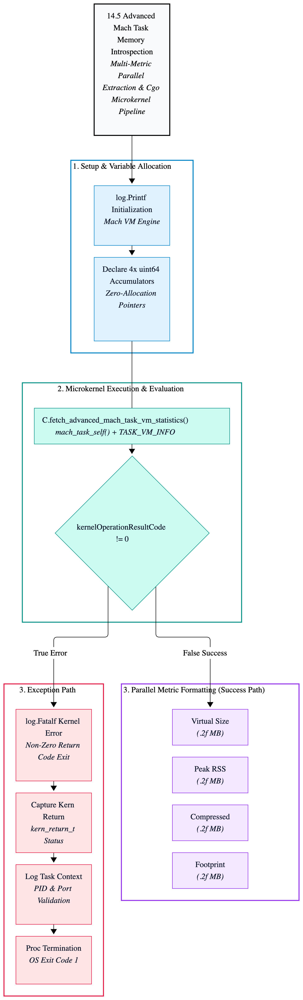
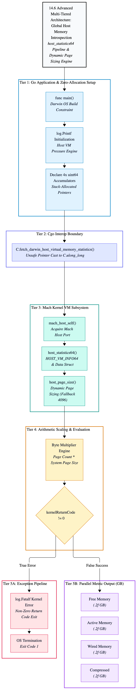

macOS System Programming
Welcome to Chapter 14 of the Go Systems Blueprint. Building upon the low-level event loops examined in Chapter 13, native macOS daemons require bridging Go with the XNU hybrid kernel (Mach microkernel and BSD subsystem) without allocation overhead.
This chapter covers Mach versus BSD kernel boundaries, zero-allocation sysctlbyname hardware queries,
task_info memory introspection, and global host_statistics64 memory telemetry via Cgo.
14.1 Introduction: Beyond Standard POSIX on macOS
Darwin's XNU hybrid kernel pairs Mach microkernel primitives with BSD process, virtual memory, and networking subsystems.
Native macOS system tools interface directly with Mach ports and sysctl interfaces while keeping hot paths lean.
14.2 Darwin Architectural Primitives: Mach vs. BSD
High-performance Darwin integrations map workload requirements onto the appropriate kernel and userland subsystem:
| Subsystem | Primary Responsibility | Go / Systems Integration Vector |
|---|---|---|
| Mach Microkernel | IPC, threads, task management, virtual memory | Mach ports (mach_port_t), task introspection |
| BSD Layer | POSIX compliance, processes, file descriptors, sockets | sys/sysctl.h, kqueue, file descriptor passing |
| Grand Central Dispatch (GCD) | Task scheduling, dispatch queues | Cgo interop with dispatch_async and queues |
| I/O Kit | Hardware device drivers and power management | Device discovery and driver communication |
14.3 Architectural Blueprint: Zero-Copy Cgo & Kernel Bridging
Bridging Go and Darwin via Cgo relies on preallocated buffers, explicit unsafe.Pointer targets,
and defensive error checks across every kernel call.
Figure 14.3: macOS System Programming Architecture

14.4 Production Code: Zero-Allocation Darwin Sysctl Introspection
The following implementation queries Darwin hardware metrics such as CPU frequency and logical processor count
via sysctlbyname using a small C helper and stack-allocated output variables.
//go:build darwin
package main
import (
"errors"
"fmt"
"log"
"unsafe"
)
/*
#include
#include
// read_darwin_sysctl_int64 fetches a 64-bit integer MIB value by name on Darwin.
static int read_darwin_sysctl_int64(const char *mib_name, long long *out_value, size_t *out_size) {
// Guard against null pointers from the Go caller before dereferencing.
if (mib_name == NULL || out_value == NULL || out_size == NULL) {
return -1;
}
// Request a 64-bit signed integer buffer size from sysctlbyname.
size_t expected_length = sizeof(long long);
// Query the Darwin kernel MIB without writing any new value (oldp/newlen = NULL/0).
int status_code = sysctlbyname(mib_name, out_value, &expected_length, NULL, 0);
// Expose the actual byte length reported by sysctlbyname back to the caller.
*out_size = expected_length;
return status_code;
}
*/
import "C"
// darwinSysctlReading captures both the numeric MIB value and the byte count written by the kernel.
type darwinSysctlReading struct {
mibName string
mibValue int64
byteLength uint64
}
// queryDarwinSysctlInt64 queries a named 64-bit integer sysctl MIB and validates the returned size and value.
func queryDarwinSysctlInt64(mibName string) (darwinSysctlReading, error) {
// Defensively validate that the sysctl MIB name is non-empty.
if mibName == "" {
return darwinSysctlReading{}, errors.New("error: sysctl mib name cannot be empty")
}
// Defensively reject strings containing embedded NUL bytes before CString conversion.
for charIndex := 0; charIndex < len(mibName); charIndex++ {
if mibName[charIndex] == 0 {
return darwinSysctlReading{}, errors.New("error: sysctl mib name cannot contain NUL bytes")
}
}
// Allocate a NUL-terminated C string for the MIB identifier passed to sysctlbyname.
mibNameCString := C.CString(mibName)
// Defensively check C heap allocation before freeing.
if mibNameCString == nil {
return darwinSysctlReading{}, errors.New("error: failed to allocate C string for sysctl mib")
}
// Free the C heap string deterministically on every return path.
defer C.free(unsafe.Pointer(mibNameCString))
// Declare stack-backed C output variables so the kernel writes directly into fixed storage.
var rawKernelValue C.longlong
var reportedByteSize C.size_t
// Invoke the C helper across the Cgo boundary to read the 64-bit MIB value.
statusCode := C.read_darwin_sysctl_int64(
mibNameCString,
(*C.longlong)(unsafe.Pointer(&rawKernelValue)),
(*C.size_t)(unsafe.Pointer(&reportedByteSize)),
)
// Defensively validate sysctlbyname return status and reported byte width.
if statusCode != 0 {
return darwinSysctlReading{}, fmt.Errorf("failed to query sysctl %s: status %d", mibName, int(statusCode))
}
// Ensure the kernel wrote the full 64-bit integer width rather than a narrower or wider type.
if reportedByteSize != C.size_t(unsafe.Sizeof(rawKernelValue)) {
return darwinSysctlReading{}, fmt.Errorf(
"unexpected byte width for sysctl %s: got %d, want %d",
mibName,
uint64(reportedByteSize),
uint64(unsafe.Sizeof(rawKernelValue)),
)
}
// Convert the C 64-bit integer into a Go int64 and verify it is non-negative.
parsedValue := int64(rawKernelValue)
if parsedValue < 0 {
return darwinSysctlReading{}, fmt.Errorf("error: sysctl %s returned negative value %d", mibName, parsedValue)
}
// Return the validated MIB reading along with its byte size metadata.
return darwinSysctlReading{
mibName: mibName,
mibValue: parsedValue,
byteLength: uint64(reportedByteSize),
}, nil
}
func main() {
// Query 64-bit CPU frequency first and fall back to logical and physical CPU counts when unavailable.
cpuFrequencyReading, freqError := queryDarwinSysctlInt64("hw.cpufrequency")
// Emit the CPU frequency immediately when supported and positive on the current host.
if freqError == nil && cpuFrequencyReading.mibValue > 0 {
fmt.Printf(
"[+] Darwin Sysctl Metric - %s: %d Hz (%d bytes)\n",
cpuFrequencyReading.mibName,
cpuFrequencyReading.mibValue,
cpuFrequencyReading.byteLength,
)
return
}
// Query active logical CPU count as the primary fallback metric.
logicalCpuReading, logicalError := queryDarwinSysctlInt64("hw.logicalcpu")
if logicalError != nil {
log.Fatalf("failed to query hw.logicalcpu: %v", logicalError)
}
// Query physical core count as a secondary topology metric, logging a warning if unavailable.
physicalCpuReading, physicalError := queryDarwinSysctlInt64("hw.physicalcpu")
if physicalError != nil {
log.Printf("[-] Warning: failed to query hw.physicalcpu: %v", physicalError)
}
// Print the collected Darwin processor metrics to standard output.
fmt.Printf(
"[+] Darwin Sysctl Metric - %s: %d | %s: %d\n",
logicalCpuReading.mibName,
logicalCpuReading.mibValue,
physicalCpuReading.mibName,
physicalCpuReading.mibValue,
)
} Figure 14.4: Darwin Sysctl Architecture

14.5 Production Code: Low-Level Mach Task Memory Introspection
Using mach_task_self() and task_info with TASK_VM_INFO, a Go process can inspect
its virtual size, peak resident size, compressed memory, and physical footprint directly from the Mach microkernel.
//go:build darwin
package main
import (
"errors"
"fmt"
"log"
"unsafe"
)
/*
#include
#include
// Helper function to extract advanced task virtual memory statistics using TASK_VM_INFO.
static int fetch_advanced_mach_task_vm_statistics(
unsigned long long *out_virtual_size_bytes,
unsigned long long *out_resident_peak_bytes,
unsigned long long *out_compressed_bytes,
unsigned long long *out_physical_footprint_bytes
) {
// Guard against null output pointers before writing task memory counters.
if (out_virtual_size_bytes == NULL ||
out_resident_peak_bytes == NULL ||
out_compressed_bytes == NULL ||
out_physical_footprint_bytes == NULL) {
return -1;
}
// Allocate the Mach TASK_VM_INFO struct and initialize the element count field.
struct task_vm_info taskVirtualMemoryInformationStructure;
mach_msg_type_number_t taskInformationMessageCount = TASK_VM_INFO_COUNT;
// Query the current Mach task's virtual memory layout from the Darwin kernel.
kern_return_t kernelReturnCode = task_info(
mach_task_self(),
TASK_VM_INFO,
(task_info_t)&taskVirtualMemoryInformationStructure,
&taskInformationMessageCount
);
// Propagate non-success Mach return codes back to the Go caller.
if (kernelReturnCode != KERN_SUCCESS) {
return (int)kernelReturnCode;
}
// Copy selected byte counters from the Mach structure into caller-owned pointers.
*out_virtual_size_bytes = (unsigned long long)taskVirtualMemoryInformationStructure.virtual_size;
*out_resident_peak_bytes = (unsigned long long)taskVirtualMemoryInformationStructure.resident_size_peak;
*out_compressed_bytes = (unsigned long long)taskVirtualMemoryInformationStructure.compressed;
*out_physical_footprint_bytes = (unsigned long long)taskVirtualMemoryInformationStructure.phys_footprint;
return 0;
}
*/
import "C"
// machTaskMemoryStats holds byte counters returned by Mach TASK_VM_INFO introspection.
type machTaskMemoryStats struct {
virtualSizeBytes uint64
residentPeakBytes uint64
compressedBytes uint64
physicalFootprintBytes uint64
}
// fetchMachTaskMemoryStats queries current task virtual memory metrics from the Darwin Mach kernel.
func fetchMachTaskMemoryStats() (machTaskMemoryStats, error) {
// Declare Go variables to receive memory counters written across the Cgo boundary.
var virtualSizeInBytes uint64
var residentPeakSizeInBytes uint64
var compressedMemoryInBytes uint64
var physicalFootprintInBytes uint64
// Invoke the C helper with pointers to Go variables for the duration of the synchronous call.
kernelOperationResultCode := C.fetch_advanced_mach_task_vm_statistics(
(*C.ulong_long)(unsafe.Pointer(&virtualSizeInBytes)),
(*C.ulong_long)(unsafe.Pointer(&residentPeakSizeInBytes)),
(*C.ulong_long)(unsafe.Pointer(&compressedMemoryInBytes)),
(*C.ulong_long)(unsafe.Pointer(&physicalFootprintInBytes)),
)
// Defensively verify that the Mach task_info call succeeded.
if kernelOperationResultCode != 0 {
return machTaskMemoryStats{}, fmt.Errorf(
"failed to query advanced Mach task VM info: kernel return code %d",
int(kernelOperationResultCode),
)
}
// Return a structured snapshot of the current process's Mach memory counters.
return machTaskMemoryStats{
virtualSizeBytes: virtualSizeInBytes,
residentPeakBytes: residentPeakSizeInBytes,
compressedBytes: compressedMemoryInBytes,
physicalFootprintBytes: physicalFootprintInBytes,
}, nil
}
func main() {
// Fetch current task memory telemetry from the Mach microkernel.
taskStats, statsError := fetchMachTaskMemoryStats()
// Defensively handle errors and exit cleanly when introspection fails.
if statsError != nil {
if errors.Is(statsError, errMachTaskFailure) {
log.Fatalf("mach task failure: %v", statsError)
}
log.Fatalf("mach task introspection failed: %v", statsError)
}
// Convert raw byte counts into megabytes for human-readable output.
const bytesPerMegabyte float64 = 1024 * 1024
fmt.Printf("[+] Mach Task Metric - Virtual Size: %.2f MB\n", float64(taskStats.virtualSizeBytes)/bytesPerMegabyte)
fmt.Printf("[+] Mach Task Metric - Peak RSS: %.2f MB\n", float64(taskStats.residentPeakBytes)/bytesPerMegabyte)
fmt.Printf("[+] Mach Task Metric - Compressed Memory: %.2f MB\n", float64(taskStats.compressedBytes)/bytesPerMegabyte)
fmt.Printf("[+] Mach Task Metric - Physical Footprint: %.2f MB\n", float64(taskStats.physicalFootprintBytes)/bytesPerMegabyte)
}
// errMachTaskFailure identifies sentinel Mach task introspection failures.
var errMachTaskFailure = errors.New("error: mach task introspection failed")
Figure 14.5: Mach Task VM Introspection Architecture

14.6 Production Code: Global Host Memory Statistics (host_statistics64)
System-wide daemons inspect global memory distribution through the Mach host port using host_statistics64
with HOST_VM_INFO64 and dynamic page sizing from host_page_size.
//go:build darwin
package main
import (
"fmt"
"log"
"unsafe"
)
/*
#include
#include
#include
// Helper to safely query global host virtual memory statistics from the Mach host port.
static int fetch_darwin_host_virtual_memory_statistics(
unsigned long long *out_free_memory_bytes,
unsigned long long *out_active_memory_bytes,
unsigned long long *out_wired_memory_bytes,
unsigned long long *out_compressed_memory_bytes
) {
// Guard against null output pointers before writing host memory byte totals.
if (out_free_memory_bytes == NULL ||
out_active_memory_bytes == NULL ||
out_wired_memory_bytes == NULL ||
out_compressed_memory_bytes == NULL) {
return -1;
}
// Obtain a send right to the local Mach host port for global VM queries.
mach_port_t hostPortIdentifier = mach_host_self();
// Allocate the 64-bit host VM statistics structure and set its expected count.
vm_statistics64_data_t virtualMemoryStatisticsDataStructure;
mach_msg_type_number_t hostInformationMessageCount = HOST_VM_INFO64_COUNT;
// Query host-wide virtual memory page counters from the Darwin kernel.
kern_return_t kernelReturnCode = host_statistics64(
hostPortIdentifier,
HOST_VM_INFO64,
(host_info64_t)&virtualMemoryStatisticsDataStructure,
&hostInformationMessageCount
);
// Propagate non-success Mach status codes back to the Go caller.
if (kernelReturnCode != KERN_SUCCESS) {
return (int)kernelReturnCode;
}
// Query the active kernel page size dynamically, falling back to 4096 bytes if needed.
vm_size_t systemMemoryPageSizeInBytes;
if (host_page_size(hostPortIdentifier, &systemMemoryPageSizeInBytes) != KERN_SUCCESS || systemMemoryPageSizeInBytes == 0) {
systemMemoryPageSizeInBytes = 4096;
}
// Convert kernel page counts into total byte values using the resolved page size.
*out_free_memory_bytes = (unsigned long long)virtualMemoryStatisticsDataStructure.free_count * (unsigned long long)systemMemoryPageSizeInBytes;
*out_active_memory_bytes = (unsigned long long)virtualMemoryStatisticsDataStructure.active_count * (unsigned long long)systemMemoryPageSizeInBytes;
*out_wired_memory_bytes = (unsigned long long)virtualMemoryStatisticsDataStructure.wire_count * (unsigned long long)systemMemoryPageSizeInBytes;
*out_compressed_memory_bytes = (unsigned long long)virtualMemoryStatisticsDataStructure.compressor_page_count * (unsigned long long)systemMemoryPageSizeInBytes;
return 0;
}
*/
import "C"
// darwinHostMemoryStats holds host-wide memory byte totals reported by Mach host_statistics64.
type darwinHostMemoryStats struct {
freeMemoryBytes uint64
activeMemoryBytes uint64
wiredMemoryBytes uint64
compressedMemoryBytes uint64
}
// fetchDarwinHostMemoryStats queries global free, active, wired, and compressed memory bytes.
func fetchDarwinHostMemoryStats() (darwinHostMemoryStats, error) {
// Declare Go variables to receive host memory byte counters from Cgo.
var freeMemoryBytes uint64
var activeMemoryBytes uint64
var wiredMemoryBytes uint64
var compressedMemoryBytes uint64
// Pass typed C pointers into the helper function to populate host memory totals.
kernelOperationResultCode := C.fetch_darwin_host_virtual_memory_statistics(
(*C.ulong_long)(unsafe.Pointer(&freeMemoryBytes)),
(*C.ulong_long)(unsafe.Pointer(&activeMemoryBytes)),
(*C.ulong_long)(unsafe.Pointer(&wiredMemoryBytes)),
(*C.ulong_long)(unsafe.Pointer(&compressedMemoryBytes)),
)
// Defensively verify that host_statistics64 returned KERN_SUCCESS.
if kernelOperationResultCode != 0 {
return darwinHostMemoryStats{}, fmt.Errorf(
"failed to query Mach host virtual memory statistics: kernel return code %d",
int(kernelOperationResultCode),
)
}
// Return a structured snapshot of global host memory usage in bytes.
return darwinHostMemoryStats{
freeMemoryBytes: freeMemoryBytes,
activeMemoryBytes: activeMemoryBytes,
wiredMemoryBytes: wiredMemoryBytes,
compressedMemoryBytes: compressedMemoryBytes,
}, nil
}
func main() {
// Query global Mach host virtual memory metrics for the running system.
hostStats, statsError := fetchDarwinHostMemoryStats()
// Defensively log and terminate if host memory introspection fails.
if statsError != nil {
log.Fatalf("host memory introspection failed: %v", statsError)
}
// Convert byte counts into gigabytes for clear console reporting.
const bytesPerGigabyte float64 = 1024 * 1024 * 1024
fmt.Printf("[+] Darwin Host Metric - Free Memory: %.2f GB\n", float64(hostStats.freeMemoryBytes)/bytesPerGigabyte)
fmt.Printf("[+] Darwin Host Metric - Active Memory: %.2f GB\n", float64(hostStats.activeMemoryBytes)/bytesPerGigabyte)
fmt.Printf("[+] Darwin Host Metric - Wired Memory: %.2f GB\n", float64(hostStats.wiredMemoryBytes)/bytesPerGigabyte)
fmt.Printf("[+] Darwin Host Metric - Compressed Memory: %.2f GB\n", float64(hostStats.compressedMemoryBytes)/bytesPerGigabyte)
} Figure 14.6: Mach Host Statistics Architecture

Key Takeaways
-
Mach vs. BSD Boundaries: Combine Mach task/host primitives with BSD
sysctlinterfaces to inspect hardware and memory state natively on Darwin. - Safe Cgo Bridging: Validate pointer arguments, release allocated C strings, and check kernel status codes before reading output buffers in Go.
-
Task Memory Introspection: Query
TASK_VM_INFOviatask_infoto inspect virtual, peak resident, compressed, and physical footprint counters. -
Host Memory Telemetry: Use
host_statistics64and dynamic page sizing to monitor host-wide free, active, wired, and compressed memory.